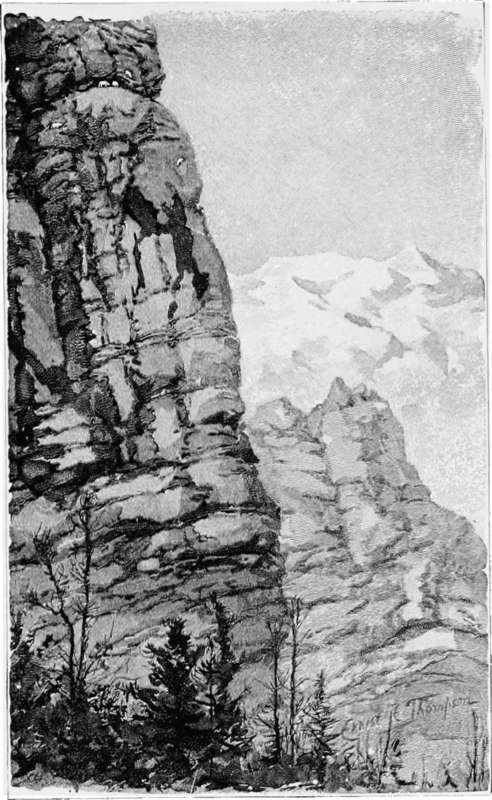
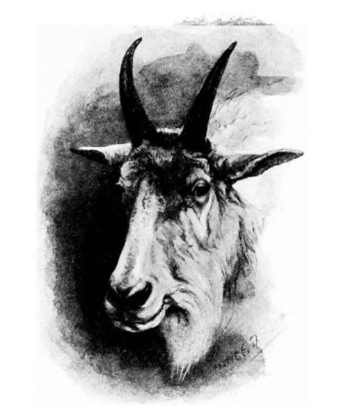

Climbing For White Goats. Continued
Description
This section is from the book "Hunting", by Archibald Rogers. Also available from Amazon: Hunting.
Climbing For White Goats. Continued
The goat is marvellously sure-footed, and from the day of its birth, is practised in climbing over the rocks; but it must not be imagined that it never falls from the insecure perches which it frequents. Such falls are not uncommon, but seem rarely to result in serious injury. Kids which have been captured when very young and kept in captivity have been observed to play at rolling down steep banks, repeating the tumble over and over again, as if practising for the falls which they might be obliged to take later in life.
The White Goat's Pasture.
The spurious hoofs, or dew-claws, of the goat, while not strictly functional, are yet of great assistance to it in climbing about among the rocks, and especially in going down hill. These hooflets are large, and catch on the ground without yielding, acting as brakes, relieving the direct strain on the middle toes of the foot. The dew-claws almost always show considerable wear against the rocks.
Hunting the goat is man's work, and to follow the game to its home among the rocks calls for the best qualities of the mountaineer. Muscle, nerve, and experience in mountain climbing are needed by the goat hunter; for the labor of reaching the animal's home is extremely arduous. In some sections it is possible to ride a horse up to the game's feeding-ground, but usually much hard foot-work must be done before the hunting-ground can be reached. When the goats have once been found, however, it is usually easy to secure them, for they are gentle and unsuspicious.
A year or two since, I was hunting in the Rocky Mountains with a friend who had never shot a goat, and I was extremely anxious that he should secure one. Besides that, there was no fresh meat in camp, so we had a double motive for hard work. Starting from the lodge one morning with the rising sun, we crossed the stream, and set our faces against the great mountain that stood before us.
First above the valley's level we were confronted by the talus, above that by a thousand feet of cliff, and then by other slide-rock and more cliffs, in all nearly five thousand feet, if we could climb so far. The slope at the foot of the cliff was perhaps fifteen hundred feet high; a mass of small rock fragments, rather firmly compacted with earth and vegetation, that lay at an angle of nearly forty-five degrees, so that the climbing was extremely steep and slow. After working our way nearly to the top of this talus, we found running along it, under the cliff, a game trail; and we followed this, knowing that it would take us to some point where the precipice which overhung us could be climbed. The trail worked higher up on the talus, and led us to a break in the cliff, where there were some fissured ledges, which promised an ascent for a few hundred feet at least. Everywhere the path showed signs of abundant use; the angles of the rock were worn and rounded by the passing of many hoofs, and no plants grew in the scanty soil in the crevices. The climbing soon became hand-over-hand work; one man standing on a ledge and holding the rifles, while the other went up six or eight feet and then took the guns from his companion, who now in his turn drew himself up over the ledges. As we proceeded, the climbing grew more difficult; and it was hard to understand how any animal, unprovided with hands or wings, could have ascended. Often the ledges on which our feet rested were only two or three inches wide; and sometimes there were no ledges, and we worked ourselves up the face of the wall, clinging with tenacious grip to projections hardly large enough to support the finger-tips, our feet resting on little roughnesses in the rock which barely supported the toe. Some of the work was trying to the nerves; but at length we had passed the worst places, and reached a narrow fissure where the ascent was easier.
After a brief pause for a restful pipe, we resumed our climb, and before very long came out on the crest of the great shoulder we had been ascending. From this we looked out over a narrow alpine valley, beyond which, steep rock-slides and frowning walls rose to a great height; and just across the valley, and half way up the slide, was seen a white patch, which could only be a goat. The stream-bed was a little below us; and the trees which grew in the valley furnished good cover for stalking the game, which, however, was as yet too far from the timber for a certain shot. The wind favored us, for it blew up the valley. We waited a little to see what the animal would do; and soon it began to walk slowly up the slide, stopping now and then to feed, and then moving on again. In a few moments it had passed behind some tree-tops, and we hurried down into the edge of the timber. The valley was only about half a mile long, and ended in a high cliff, over which the stream poured. If hunted and hunters kept along on their respective sides, they would come together at its head. Hidden by the trees, we went on, timing our advance by the goat's progress; and at length, when we reached the end of the valley, the animal was on the slide-rock above us, and only eighty yards distant.
Soon the shot rang out. The goat gave a bound, and began to scramble along the slide-rock toward the cliff. Another shot sounded, and then another, the animal climbing all the time; but at the foot of a high ledge it stopped, too weak to surmount it. It turned, and for a few seconds stood with lowered head looking at us; then it reeled, its legs seemed to give way, and it fell, slipping, sliding, and bounding down the cliff's face and on to the rocks below, and there turning over and over, it rolled down to us. The work of preparing our loads of meat for transportation to camp occupied some time, so that before we were ready to go the sun had long been hidden behind the high peaks that flanked the narrow valley.
Trying to make a short cut by following down the stream, instead of returning as we had come, we soon found ourselves among ledges that could not be descended; and it took five hours of hard climbing and walking — much of it in the dark — down ledges, among fallen timber, and through swamps, before we saw the light of the fire flickering through the lodge covering.
A week later, we climbed through the snow to the crest of another mountain to make some notes on the geography of the region. After we had taken our observations, one of the party called attention to a little spot of white in the shadow of a great rock below us; and looking at it through the field-glasses, it was seen to be a goat.
We approached very cautiously from above, keeping the rock between it and ourselves, and tiptoeing along as quietly as possible over the clinking shale. When we were within perhaps ten yards of the rock, the goat walked from under it on my friend's side. He fired once, again, and again. The goat was mortally hurt, but at first it kept its feet and ran. The mountain side was steep, and just below it was a gulf two thousand feet deep. It fell, rolled over, came to its feet again, and tried to stop. In vain; with staring eyes it looked toward the brink before it, holding back with all its might, bracing itself with stiffened outstretched legs, while still it slipped and slid onward toward the verge of the cliff, and we watched it with hearts full of pity now, although —so full is man of contradictions —we had felt no pity when the bullets struck it. A moment more, and it had reached the brink and disappeared, and still I waited and watched, listening and looking for I knew not what, half fascinated by the pitifulness of the sight; and then, half a mile down the valley, I saw floating along on the wings of the gale a tuft of white hair as large as my hand, torn from its hide by some crag against which it struck as it whirled down into the abyss.
Head of Male White Goat.
But the killing of the game is a mere incident of this climbing for goats. The perfect freedom of the mountain life is one of its greatest charms, but far beyond that is the joy which comes of the surroundings. The lofty mountains uplift the soul, and one lives in a mental atmosphere above that of his every-day life. By night he sleeps beneath the wind-swept pines which sigh his lullaby; by day he pushes his way far above timber line over the naked rocks and among the crags. His companions are the changeless peaks, the far-reaching snow-fields, and the blue ice rivers. The voices that speak to him are the hoarse brawling of the mountain torrents, the shrill scream of the winds throwing themselves against the peaks, the thundering report of the moving glaciers, or the long-drawn roar of the snow slides. From lofty pinnacles he looks down on mountains and valleys and lakes far below him, and is thrilled by feelings which he cannot put in words. The very air he breathes is instinct with the solemn spirit of the mountains, and he is awed by its inscrutable mysteries.
Moved by emotions which he but half comprehends, he rejoices in each varying aspect of the scene, whether the change be a smile or a frown. After the dark shadow of a moving cloud has passed, the sun shines more brightly; the bitter wind that half freezes him does not seem unkind; he welcomes the blinding snowstorm, or the cold mist that sweeps along the mountain side, shrouding peak after peak, blotting out point after point, till at last it has hidden all the view, and has wrapped him in its chilling embrace. On these heights he exults alike in sunshine and in storm; for here he has found nature, pure and untouched, and for the time has become a part of it.
Continue to: